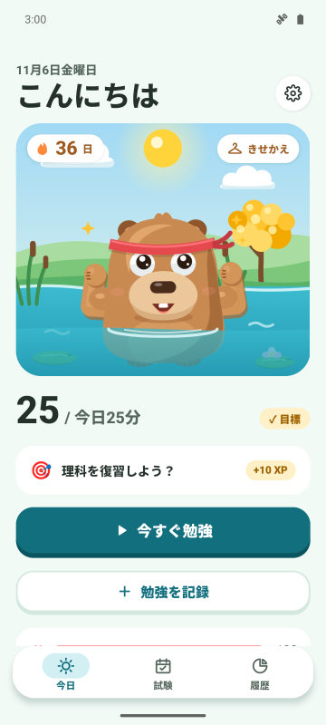
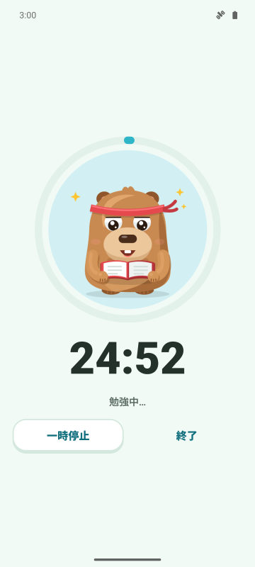
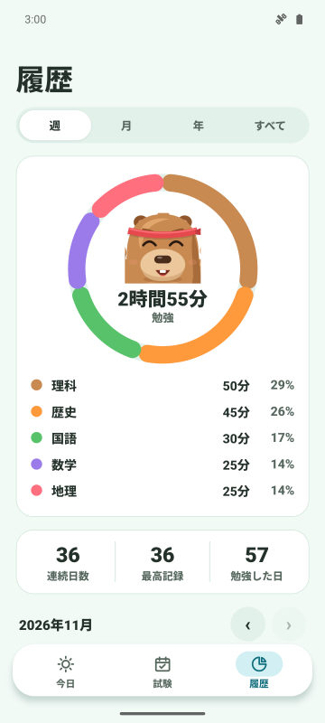
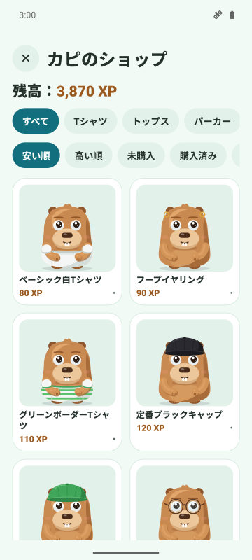

1日の目標と連続記録
1日に勉強する時間を決めよう。達成すると連続記録が伸びて、カピバラが大喜び。
集中タイマー、毎日の連続記録、試験までのカウントダウン。勉強するほどカピバラが元気に育ちます。
Google Playで近日公開
Android向け無料。iPhone版は今後。

1日に勉強する時間を決めよう。達成すると連続記録が伸びて、カピバラが大喜び。
3つのモードがあるタイマー。保護モードでは、避けたいアプリの上にカピバラが現れます。
試験を登録して残り日数をチェック。毎日、一番手をかけたい科目のミッションが届きます。
勉強でXPを集めて服やアクセサリーと交換。記念日や誕生日もお祝いします。



はい。広告付きで無料です。プレミアム（任意）では広告がなくなり、保護モード、集中中の通知オフ、毎月3個の連続記録シールドが使えます。
いいえ。データはスマホの中に保存されます。希望すれば自分のGoogleドライブと同期できます。
はい。試験日を登録するとカウントダウンが表示され、7日前・3日前・前日にお知らせが届きます。
Forestは木を育てるアプリ。CapyFocoは勉強に合わせて育つカピバラのお世話をしながら、連続記録、目標、試験カウントダウンをひとつのアプリで管理できます。
今はAndroidのみです。iPhone版も予定しています。